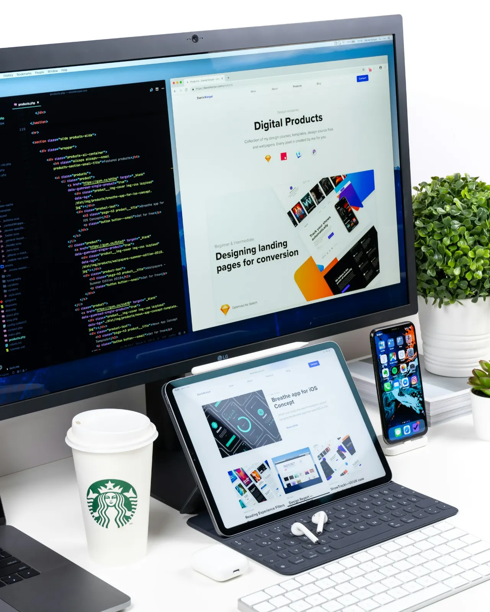
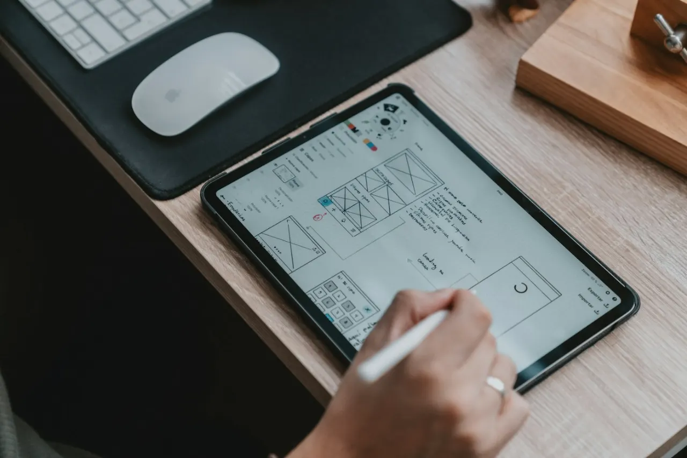

WordPress ve Web Tasarım
Müşteri sitelerinin sayfa düzenlerini WordPress üzerinde kurdum; yayındaki sitelerde tasarım ve içerik güncellemeleri yaptım.
- WordPress
- Sayfa düzeni
Deneyim
WordPress sitelerinden Google Ads kampanyalarına, sosyal medya içeriklerinden grafik tasarıma kadar ekip halinde çalıştım.
Deneyim
Ajansta görev aldığım beş ana çalışma alanı.
Müşteri sitelerinin sayfa düzenlerini WordPress üzerinde kurdum; yayındaki sitelerde tasarım ve içerik güncellemeleri yaptım.
Masaüstü, tablet ve mobil görünümleri ayrı ayrı ayarladım ve revizyonlardan sonra yeniden kontrol ettim.
Sayfa başlıkları, açıklamalar ve site yapısında SEO düzenlemeleri yaptım; Google Ads kampanyası kurup anahtar kelime ve reklam metni hazırladım.
Sosyal medya içerik planı hazırladım ve paylaşımları yönettim; gönderi, banner ve site görselleri tasarladım.
Hazır bileşenlerin yetmediği yerlerde yapay zekâ yardımıyla küçük kod eklemeleri hazırlayıp sitede test ettim.
Süreç
Sayfaların iskeletini, bölümlerini ve menü yapısını oluşturuyorum.
Renk, yazı ve görselleri WordPress üzerinde sayfaya işliyorum.
Tablet ve mobil görünümü tek tek kontrol edip ayarlıyorum.
Siteyi yayına alıyor, gelen revizyonları uyguluyorum.
Örnek çalışmalar
Müşteri sitelerinde sayfaların yapısını ekiple birlikte hazırladım.
Müşteriden gelen taleplere göre tasarım ve içerik güncellemeleri yaptım.
Masaüstü, tablet ve mobil görünümleri ayrı ayrı gözden geçirdim.


Yeni iş fırsatlarına açığım
İki yıllık ajans deneyimimi, yeni projelerde daha fazla sorumluluk alabileceğim bir web tasarım ajansında veya dijital ekipte sürdürmek istiyorum.